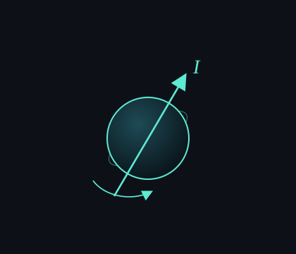

Split from a 2021 class note on spin, magnetic moment, and gyromagnetic ratio.
When we talk about nuclear magnetic resonance, start with spin. Magnetic moment and gyromagnetic ratio come after.
Spin is a kind of angular momentum that protons, neutrons, nuclei, and electrons have. People also call it spin angular momentum.
The funny point: the particles themselves are not actually spinning. It is just a property they come with. You can still picture them as tiny balls carrying angular momentum I.

That property can talk to a magnetic field B0, the way ordinary angular momentum L talks to gravity.
The size of spin is quantized. You only get full or half integers: 0, 1/2, 1, 3/2, 2, and so on. Electrons always have S = 1/2. MRI mostly uses 1H, which also has I = 1/2.
Only nuclei with non-zero spin can absorb and emit electromagnetic radiation, so only they can resonate with B0. 1H is a single proton, so the usual MRI signal is from protons. Do not say "proton imaging" if you are using some other nucleus.
Next note: magnetic moment.
Further info: https://www.mriquestions.com/spin.html
中文
從 2021 年那篇課間筆記拆出來的。當時一頁寫了 spin、磁矩、旋磁比。
講核磁共振，先從 spin 開始。磁矩和旋磁比後面再說。
Spin 是質子、中子、原子核、電子都帶的角動量。也有人叫 spin angular momentum。
怪的是粒子本身並沒有在轉。它只是帶著這個性質。你還是可以把它想成一顆帶著角動量 I 的小球。
這個性質能跟磁場 B0 說話，就像普通角動量 L 會跟重力說話。
Spin 的大小是量子化的。只會出現整數或半整數：0、1/2、1、3/2、2……電子永遠是 S = 1/2。MRI 最常用的是 1H，也是 I = 1/2。
只有 spin 不為零的原子核才能吸收、放出電磁波，才能跟 B0 共振。1H 就是一顆質子，所以平常 MRI 訊號來自質子。換別的核就別再說「質子成像」。
下一則：磁矩。